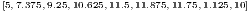
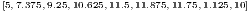

E 8.1.1. Expanda a função suave  em um polinômio de Taylor adequado
para obter as seguintes aproximações:
em um polinômio de Taylor adequado
para obter as seguintes aproximações:
E 8.1.1. Expanda a função suave em um polinômio de Taylor adequado
para obter as seguintes aproximações:


E 8.1.2. Use os esquemas numéricos do exercício 8.1.1 para aproximar as seguintes derivadas:
 onde
onde  e
e  .
=======
src="main3552x.png" alt="f′(x) " class="math" > onde
.
=======
src="main3552x.png" alt="f′(x) " class="math" > onde  e
e  .
>>>>>>> 62bea6a0d0a1d3eca740d93a452697554da972de
.
>>>>>>> 62bea6a0d0a1d3eca740d93a452697554da972de
 onde
onde  onde >>>>>> 62bea6a0d0a1d3eca740d93a452697554da972de
f (x) = e " class="math" > e
onde >>>>>> 62bea6a0d0a1d3eca740d93a452697554da972de
f (x) = e " class="math" > e  .
.
 onde
onde  onde
onde  e
e  .
. Use  e
e  e compare com os valores obtidos através da
=======
src="main3561x.png" alt="h = 10- 2 " class="math" > e
e compare com os valores obtidos através da
=======
src="main3561x.png" alt="h = 10- 2 " class="math" > e  e compare com os valores obtidos através da
>>>>>>> 62bea6a0d0a1d3eca740d93a452697554da972de
avaliação numérica das derivadas exatas.
e compare com os valores obtidos através da
>>>>>>> 62bea6a0d0a1d3eca740d93a452697554da972de
avaliação numérica das derivadas exatas.
E 8.1.3. Use a expansão da função  em torno de
em torno de  em polinômios de
Taylor para encontrar os coeficientes
em polinômios de
Taylor para encontrar os coeficientes  ,
,  e
e  tais que
tais que


Resposta.


![f′(0)= h11+h2l[- hh21f(-h1)+(hh21 - hh12)f(0)+ h1h2f(h2)]](main3517x.png)


![[ ( ) ]
f′(0)= h11+h2l - hh21f(-h1)+ hh21 - hh12 f(0)+ h1h2f(h2)](main3575x.png)


E 8.1.4. As tensões na entrada,  , e saída,
, e saída,  , de um amplificador foram
medidas em regime estacionário conforme tabela abaixo.
, de um amplificador foram
medidas em regime estacionário conforme tabela abaixo.


 e
e  usando as seguintes técnicas:
usando as seguintes técnicas:
 que
melhor se ajusta aos pontos pelo critério dos mínimos quadrados.
que
melhor se ajusta aos pontos pelo critério dos mínimos quadrados.

Resposta.